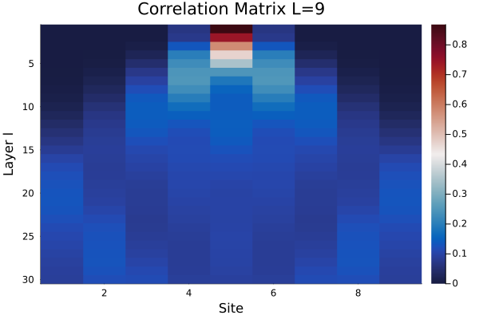
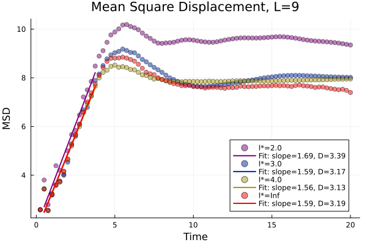

Operator evolution Tilted Transverse Field Ising model
using PauliPropagation
using PlotsIn this example, we will compute the two-point correlation function of an observable undergoing a unitary evolution given by the transverse field Ising model with a tilted field.
\[ H = \sum_{(j,\, j+1)} Z_j Z_{j+1} + g_z \sum_{j=1}^{n} Z_j + g_x \sum_{j=1}^{n} X_j. \]
The unitary for its Trotterized Hamiltonian evolution of $l$-layer with time $\Delta t$ is implemented in tiltedtfitrottercircuit.
\[ U(\Delta t) = \prod_{a=1}^{l} \prod_{j=1}^n e^{-i \Delta t g_x X_j} \prod_{j=1}^{n-1} e^{-i \Delta t g_z Z_j} e^{-i \Delta t g_z Z_j Z_{j+1}}. \]
# Define the set of local operators that are part of the Hamiltonian
"""
function tiltedtfi_local_ham_pauli(
nq::Int,
gx::Float64,
gz::Float64,
topology=nothing,
site=nothing,
)
Construct local energy operator for the tilted transverse field Ising model.
# Arguments
- `nq::Int`: The number of qubits in the system.
- `gx::Float64`: The transverse field strength.
- `gz::Float64`: The longitudinal field strength.
- `topology=nothing`: Circuit topology used to construct the local energy operator.
- `site=nothing`: The site at which to construct the local energy operator.
# Returns
- `PauliSum`: The local energy operator.
"""
function tiltedtfi_local_ham_pauli(
nq::Int,
gx::Float64,
gz::Float64,
topology=nothing,
site=nothing,
)
if isnothing(site)
if nq % 2 == 0
site = Int(nq / 2)
else
site = Int((nq + 1) / 2)
end
else
site = site
end
# check if the site is in the topology
if topology != nothing
max_site = maximum(Iterators.flatten(topology))
if site ∉ Iterators.flatten(topology)
throw(ArgumentError("Site $site is not in the topology."))
end
# check that number of qubits
if nq != max_site
throw(ArgumentError(
"The number of qubits $nq is not equal to the \
maximum index $max_site in the topology."
))
end
else
topology = [(ii, ii + 1) for ii in 1:nq-1]
end
# Build local energy operator
local_energy = PauliSum(nq, PauliString(nq, :X, site, gx))
add!(local_energy, :Z, site, gz)
terms_site = Base.filter(x -> site in x, topology)
for pair in terms_site
# coefficient is split as 1 / number of terms
add!(local_energy, [:Z, :Z], pair, 0.5)
end
return local_energy
end
# define evolution angles for TTFI model
"""
Compute the evolution angles for the tiltied transverse field Ising model.
"""
function thetas_ttfi(circuit; deltat=1., J=1, gz=0.9045, gx=1.4)
thetas = []
indices_gate_zz = getparameterindices(circuit, PauliRotation, [:Z, :Z])
indices_gate_x = getparameterindices(circuit, PauliRotation, [:X])
indices_gate_z = getparameterindices(circuit, PauliRotation, [:Z])
for (idx, gate) in enumerate(circuit)
if idx in indices_gate_zz
coupling_strength = deltat * J
elseif idx in indices_gate_x
coupling_strength = deltat * gx
elseif idx in indices_gate_z
coupling_strength = deltat * gz
else
throw(ArgumentError("Gate at index $idx is neither ZZ, X nor Z rotation"))
end
push!(thetas, coupling_strength * 2) # e^i t P / 2 * 2
end
return thetas
endthetas_ttfi (generic function with 1 method)# Define time evolution function
"""
Perform Pauli propagation using the merging BFS algorithm.
Args:
circuit: The circuit to be applied.
p_init: The operator to be propagated.
thetas: The angles for the Trotter steps.
max_weight: The maximal operator weight.
min_abs_coeff: Neglect small coefficients.
Returns:
p_propagated: The evolved operator; correlation_matrix: ccorrelation matrix.
"""
function pauli_propagation(
nq::Int,
p_init::PauliSum;
max_weight=Inf,
min_abs_coeff=0.,
customtruncationfunction=nothing,
nl=1,
deltat=0.25,
periodic=false,
circuit = tiltedtfitrottercircuit,
topology=bricklayertopology,
gx=1.4,
gz=0.9045,
)
circ = circuit(nq, 1; topology=topology(nq, periodic=periodic))
thetas = thetas_ttfi(circ; deltat=deltat, gx=gx, gz=gz)
correlation_matrix = zeros(nl + 1, nq)
init_overlap = zeros(nq)
fixed_paulis = [
tiltedtfi_local_ham_pauli(nq, gx, gz, topo, j) for j in 1:nq
]
# Compute the renormalized expectation values for the initial pauli p_init:
# Tr[P P_fixed]/ 2^n
# note this is directly the coefficient of P_fixed.
for j in 1:nq
init_overlap[j] = scalarproduct(p_init, fixed_paulis[j])
end
norm = sum(init_overlap)
correlation_matrix[1, :] = init_overlap / norm
p_propagated = p_init / norm # normalize the initial state
for i in 1:nl
# Pauli propagation for a single Trotter step
p_propagated = propagate(
circ, p_propagated, thetas; max_weight=max_weight,
min_abs_coeff=min_abs_coeff,
customtruncationfunction=customtruncationfunction
)
# Compute the local expectation values for p_propagated
for j in 1:nq
correlation_matrix[i+1, j] = scalarproduct(
p_propagated, fixed_paulis[j]
)
end
end
return p_propagated, correlation_matrix
endpauli_propagationOperator evolution Tilted Transverse Field Ising model (TTFI) (L=9)
Given an initial local Hamiltonian operator p_init at site $j$, e.g.
\[ p_{j} = \frac{1}{2} (Z_{j-1}Z_{j} + Z_{j}Z_{j+1}) + g_z Z_j + g_x X_j \]
Now we compute the evolved operator $p_j(t) = U(t)^\dagger p_j U(t)$ after a depth-$l$ circuit with $t = l\Delta t$. Here $p_j(t)$ is given by p_propagated.
We also compute the correlation matrix
\[ M_{ij}(t) = \text{Tr}[p_i(t) p_j]. \]
In particular, in the example code below we compare the correlation matrix for propagation computed from different truncations Pauli weights.
The exact evolution is given by setting the truncation weight to be Inf. However, we will see in practice high weight Paulis can be truncated for approximate evolutions.
nq = 9 # number of qubits
nl = 80 # number of layers l
gx = 1.4 # transverse field strength
gz = 0.9045 # longitudinal field strength
deltat = 0.25 # Trotterization time step
periodic = false
truncations = [2, 3, 4, Inf] # truncation Pauli weights
topo = bricklayertopology(nq, periodic=periodic)
p_init = tiltedtfi_local_ham_pauli(nq, gx, gz, topo)
corr_mats_truncations = Dict()
p_propagated_truncations = Dict()
for max_weight in truncations
p_propagated, correlation_matrix = pauli_propagation(
nq, p_init, gx=gx, gz=gz, nl=nl, periodic=periodic,
max_weight=max_weight, deltat=deltat
)
corr_mats_truncations[max_weight] = correlation_matrix
p_propagated_truncations[max_weight] = p_propagated
end
We can look at the correlation matrix $M_{5j}(l)$ (here we have set $i=5$).
Notice that the correlation becomes non-zero for positions that grow linearly with the number of layers (time). The slope is roughly is "butterfly velocity".
Moreover, the weight of the matrix at the intial site $5$ decreases with time, showing the "spreading" of operators.
# Let's plot the exact correlation matrix for short times
corrmat_exact = corr_mats_truncations[Inf]
heatmap(corrmat_exact[1:30, 1:end], yflip=true, c=:balance, xlabel="Site", ylabel="Layer l", title="Correlation Matrix L=9")
Now we are ready to extract the diffusion constant $D$ of this model. This has been analyzed in Reference RKF22.
The diffusion constant is defined via the slope of the mean-squared displacement (MSD) $d^2(t)$ as
\[ D = \frac{1}{2} \partial_t d^2(t). \]
MSD roughly measures how far an operator has traveled to, defined as (see EQ(3) in the paper above)
\[ d^2(t) = (\sum_j C_j(t) j^2) - (\sum_j C_j(t) j)^2, \]
where $C_j(t) = \text{Tr} [p_{i=5}(t) p_j]$ is the evolved amplitude of the local Hamiltonian operator $p_j$.
#@title | Some utility functions for extracting diffusion constants
function msd(cor_mat)
"""
Compute the mean square displacement from correlation matrix.
Args:
cor_mat: correlation matrix (time, site).
Returns:
msd: mean square displacement d^2(time).
"""
nt = size(cor_mat)[1] # number of time steps
dsquared = zeros(nt)
for i in 1:nt
first_term = 0
second_term = 0
for (j, c) in enumerate(cor_mat[i, :])
first_term += c * j^2
second_term += c * j
end
dsquared[i] = first_term - second_term^2
end
return dsquared
end
"""
function to perform linear regression using the closed-form solution
"""
function linear_regression(x, y)
# Create the design matrix with a column of ones (for intercept) and x values
X = [ones(length(x)) x]
# Compute the least squares solution
intercept, slope = X \ y # This solves (X'X) \ (X'y), returning [intercept, slope]
return slope, intercept
end
"""
function to fit the mean square displacement
"""
function fit_msd(msd_result, fit_range, deltat)
fit_time = collect(fit_range) * deltat
slope, intercept = linear_regression(fit_time, msd_result[fit_range])
fitted_line = slope * collect(fit_time) .+ intercept
return slope, intercept, fitted_line
end
"""
Postprocessing fitted lines for the mean square displacement.
Args:
corr_mats_truncations (Dict(Vector)): correlation matrices for different truncations.
truncations (Vector): truncation values.
fit_range (UnitRange): range of time steps to fit the mean square displacement.
deltat (Float): time step.
Returns:
fitted_lines (Dict(Vector)): fitted lines for the mean square displacement.
slopes (Dict(Float)): slopes of the fitted lines.
"""
function collect_fitted_lines(corr_mats_truncations, truncations, fit_range, deltat)
fitted_lines = Dict()
slopes = Dict()
for max_weight in truncations
msd_result = msd(corr_mats_truncations[max_weight][2:end, :])
slope, intercept, fitted_line = fit_msd(msd_result, fit_range, deltat);
fitted_lines[max_weight] = fitted_line
slopes[max_weight] = slope
end
return fitted_lines, slopes
endcollect_fitted_linesUsing the utility functions to compute the mean-sqaured displacement (MSD) $d^2(t)$, we fit the MSD to extract the diffusion constant $D$.
Moreover, we compare the MSDs extracted using Pauli Propagation with various truncation weights $l^* = 2, 3, 4$ as well as MSD from the exact evolution $l^* = \infty$.
We see that the evolution quickly converges with finite truncation weight. Our results here reproduce Fig.2(b) for $L=9$ in RKF22.
fit_range = 2:15
fitted_lines, slopes = collect_fitted_lines(corr_mats_truncations, truncations, fit_range, deltat)
dpi = 300
Plot = plot()
colors = palette(:rainbow, length(truncations))
plot_truncations = truncations
for (i, max_weight) in enumerate(plot_truncations)
msd_result = msd(corr_mats_truncations[max_weight][2:end, :])
time = collect(1:nl) * deltat
fit_time = collect(fit_range) * deltat
slope = slopes[max_weight]
fitted_line = fitted_lines[max_weight]
scatter!(
Plot, time, msd_result, label="l*=$max_weight", xlabel="Time", ylabel="MSD",
dpi=dpi, markercolor=colors[i], alpha=0.5, markershape=:circle,
)
plot!(Plot, fit_time, fitted_lines[max_weight], lw=2, color=colors[i],
label="Fit: slope=$(round(slope, digits=2)), D=$(round(slope*2, digits=2))",
title="Mean Square Displacement, L=$nq", legend=:bottomright)
end
display(Plot)